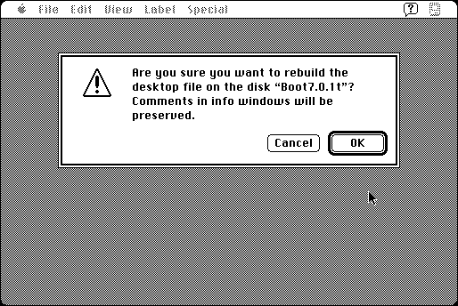

Download
Super_Comments_2.0.8.zip (94K) Super Comments 2.0.8 repackaged into a zipped hfs disk image and checksum file. The disk image can be mounted with Mini vMac.
Super_Comments_2.0.8.sit.hqx (123K) Super Comments 2.0.8 in the original format.
copyright: Flux Software
mod date: Feb 3, 1997
license: shareware
from url :
Welcome to Flux Software
“Enables your Macintosh to keep the Finder Get Info comments from being erased when the desktop is rebuilt under versions of MacOS prior to 7.5.3. It also permits them to be viewed in the Open File dialogs and edited in the Save File dialogs.” Requires System 7.

If you find these downloads useful, please consider helping the Gryphel Project, which hosts them.
Here are the md5 checksums for the downloads, signed with Gryphel Key 5:
--------- GRY SIGNED TEXT --------- 7494f78d083b269bfc7984a6fced9396 Super_Comments_2.0.8.zip d70e884934bc3bbba581bc8c23926ef2 Super_Comments_2.0.8.sit.hqx ------- BEGIN GRY SIGNATURE ------- Gry/4Xa8CFcUzxdN/MlgaRsdcPyqQaG/QCk0ZYaaZXSoXyZRbimf1EBtRmQHOWaG I7A7vaSlPqERuF6vrfcoRjYaxB6zSd6HIcZjHFJI5BiMot4IW9JQ6HiRf85AOPgu /H4ocTS27TwvAJBA1y5FJRa1XYoLpieo0thzdWaKlo+HXSiHziSIYqvIS9WIBs/s -------- END GRY SIGNATURE --------